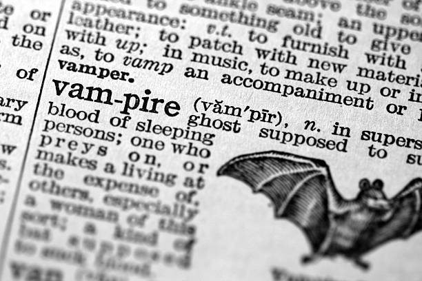
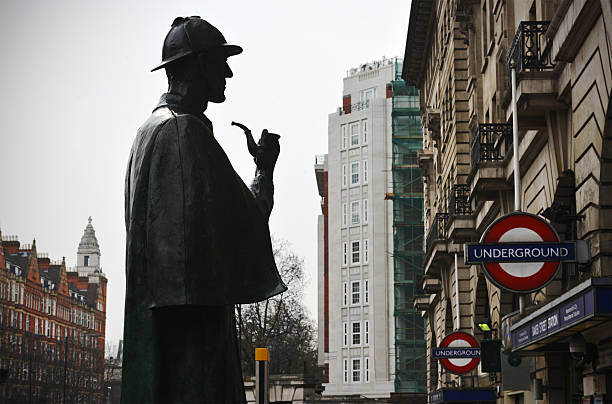
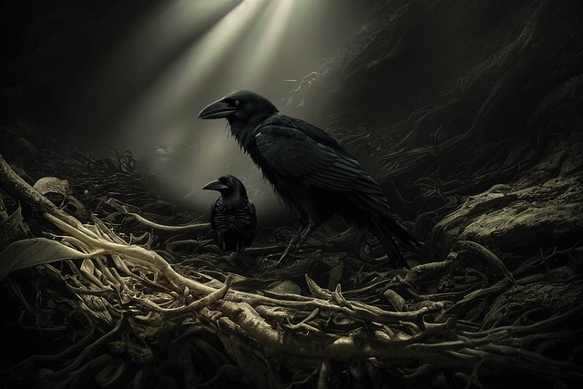
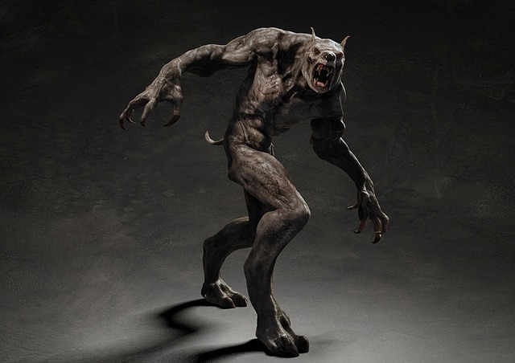
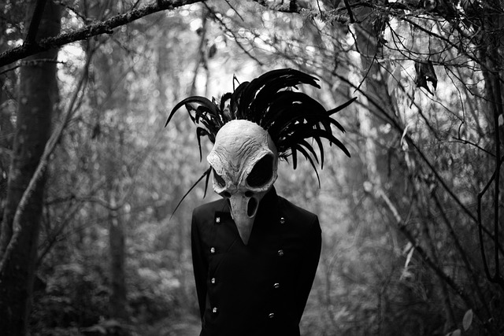
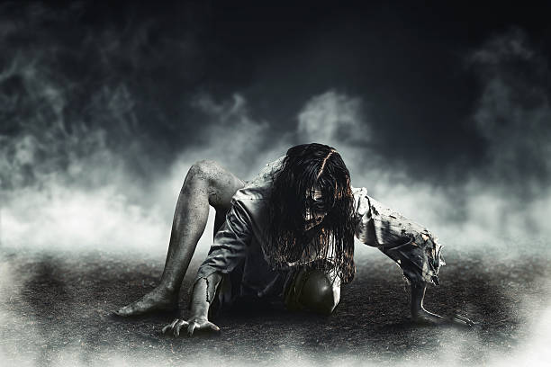

Biblioteca online
Deseja deseja ler histórias de drama, ação, ficção policial, mistério, investigação, terror e supernatural? você consegue encontrar tudo isso aqui! desça a página e se aventure, navegue em histórias com grande emoção


 

